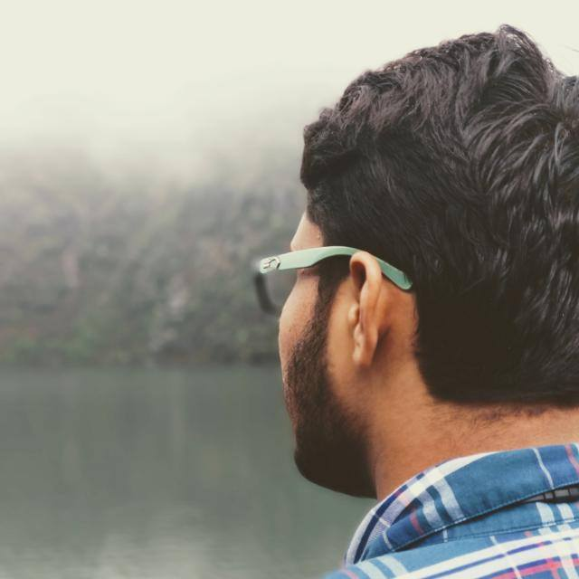

Swapnil

Ehraz
Team

Nikhilesh
Priyanshu
A green Initiative intended to smoothen Home to Industry journey of Waste As a nation, we are not handling our domestic waste output intelligently. There is not much focus on maintaining home to industry flow of produce/Waste.We don't channelise our useful domestic 'produce' to the right industry. Most of waste can be utilised in one way or the other.
The solution is to establish the proper communication channel between Industry which need Waste Produce and to people who are the producers.Our Idea is to swiftly connect these people with our Techno-cum-management and monetised (of course ) system. System will comprise of a website/app powered by a database of Industry (Industry means whoever in need) requirements , and a local on-ground system of "collection agents" fueled by money and their social responsibility.
App will comprise of two databases. One will be feeded by the materials required by the Industry and other with Domestic Waste and Scrap items which corresponds to required materials for the Industry.
We are third-semester sophomores pursuing Bachelor of Technology in Computer Science and Engineering at Noida Institute of Engineering and Technology, Greater Noida.
Contact Us:8585905869
Email us :nikhileshofficial@gmail.com